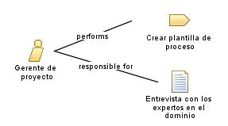

| Role: Gerente de proyecto |
| |
 |
Encargado de planificar, coordinar y supervisar todas las actividades relacionadas con el desarrollo del módulo de facturación y contabilidad. Su objetivo principal es asegurar que el proyecto se complete a tiempo, dentro del presupuesto y cumpliendo con los requerimientos establecidos.
|
| Synonyms:
Director de proyecto, líder de proyecto. |
|
Relationships
 |
| Primary Performs |
|
| Additionally Performs |
|
| Modifies |
|
Main Description
|
Se encarga de liderar y gestionar el proyecto desde la etapa de documentación del proceso inicial hasta la
implementación y puesta en marcha del sistema. Se encarga de definir los objetivos y los alcances del proyecto, asignar
recursos, coordinar a los miembros del equipo y asegurar la comunicación efectiva entre todos los involucrados. Además,
supervisa el progreso del proyecto, gestiona los riesgos y toma decisiones clave para garantizar el éxito del
proyecto.
|
Staffing
| Skills |
Gestión de proyectos, planificación, coordinación, supervisión, liderazgo, comunicación efectiva, gestión de riesgos, toma
de decisiones, resolución de conflictos, gestión de recursos y presupuesto, conocimientos de metodologías y herramientas de
gestión de proyectos. |
| Synonyms |
Director de proyecto, líder de proyecto. |
|